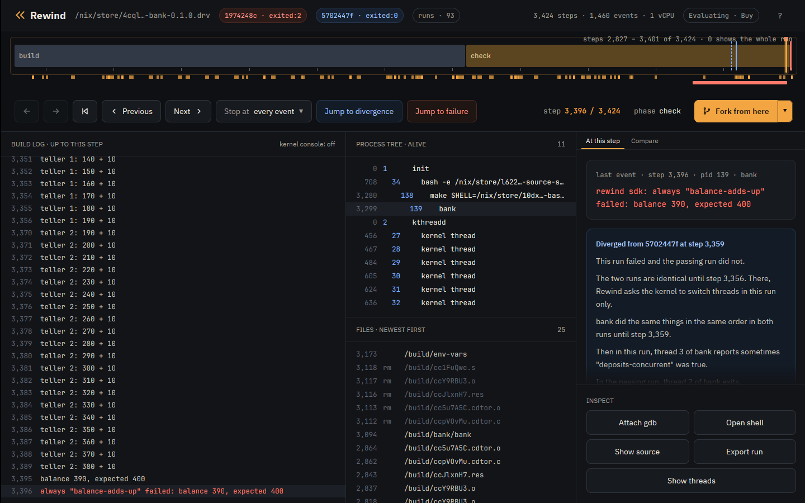
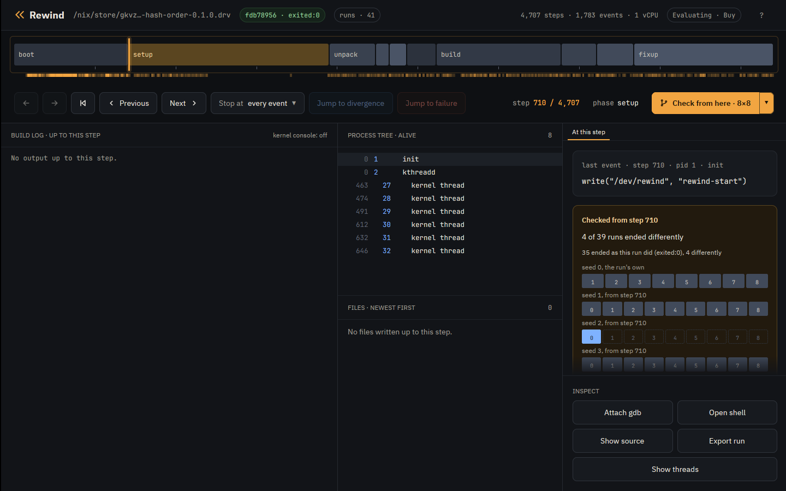

Tutorial · Properties
Tutorial: property-based testing
By default rewind check judges a run by how it ends. It runs the job under many
thread schedules and calls a schedule failing when it ends differently from schedule 0, the
run with nothing perturbed: another exit status, a signal, or an output with another hash. A
test that exits 0 on schedule 0 and 1 on schedule 5 is the bug the
Nix tutorial finds.
You can also state properties that every run must have, and check judges each schedule by them. A property can be one of Rewind's built-in checks on the files and processes a run touched, an assertion the program makes about itself with the Rewind SDK, or a script of your own. Check can also vary the program's randomness with seeds, as well as its schedule.
The examples are three small programs from
examples:
config-reload, bank and hash-order. Install Rewind as
the Nix tutorial does.
Catch a bug on the first run
config-reload rewrites its config file in place: it truncates the file, then
writes the two lines one at a time. Another process rereads the file meanwhile. The
program's own test fails only when a read lands between the truncate and the last write,
which few schedules do.
The atomic-replace property fails a run that truncates a file in place, where
it should write a new file and rename it over the old one. The property looks at what the
program did, not at how the run ended, so schedule 0 already violates it and check finds
the bug with no search:
$ rewind check --epoch 1790985600 --schedules 8 --property 'atomic-replace=*.conf' github:fzakaria/rewindvm#config-reload
rewind: packing 62 store paths for config-reload-0.1.0
schedule 0: exited:0 4563 steps f7b1c7741aba run 366325e47af7c8c3 violates atomic-replace
atomic-replace: step 3232: process 139 (config) truncated /build/config-reload/app.conf in place, which the run wrote at step 3227; a reader can see it empty or half written
...
schedule 8: exited:2 3667 steps run ff5bfee8e25d87a2 violates atomic-replace
every schedule violated a property, as schedule 0 did
open it at the step: rewind open 366325e47af7c8c3 3232
atomic-replace flags the unsafe write whether or not a reader saw the
half-written file. no-read-while-written flags the reader: it fails a run in
which a process opens the file for reading while another process has it open for writing.
Only some schedules do that, so check searches for one and narrows it to the step that
decides it:
$ rewind check --epoch 1790985600 --property 'no-read-while-written=*.conf' github:fzakaria/rewindvm#config-reload | grep -E 'decides it|failing run'
schedule 1 violates no-read-while-written; finding the step that decides it
step 3254 decides it: a request to switch threads there makes the run violate no-read-while-written
failing run violates no-read-while-written: step 3261: process 140 (config) opened /build/config-reload/app.conf for reading while process 139 (config), which opened it for writing at step 3254, had not closed it
--property replaces the default, and you can repeat it to judge runs by
several properties. Rewind includes these:
| Property | A run violates it when |
|---|---|
same-outcome |
it ends differently from schedule 0; the default |
exit-zero |
the job does not exit 0 with every output made |
no-crash |
a process dies of a signal such as SIGSEGV, even if a retry hid it |
no-orphans |
a process the job started is still running when the job exits |
single-writer=GLOB |
two processes have a matching file open for writing at once |
atomic-replace=GLOB |
a matching file the run wrote is truncated or recreated in place |
no-read-while-written=GLOB |
a matching file is opened for reading while another process writes it |
writes-within=DIR:DIR |
the job writes outside these directories |
sdk |
an assertion made with the Rewind SDK fails |
junit=GLOB |
a test that passed on schedule 0 fails, by the job's JUnit XML reports |
script=PATH |
a program of yours exits 1 |
rewind check --help describes each in full.
Assert from inside the program
bank has two threads deposit into one balance without a lock, so one deposit
can overwrite another. It includes rewind.h, the C header of the Rewind SDK,
and makes two assertions:
/* Another teller is mid-deposit: the case a lock around the read and
* store has to handle, and the only way to lose a deposit without one. */
int others = atomic_fetch_add(&depositing, 1);
REWIND_SOMETIMES(others > 0, "deposits-concurrent");
...
REWIND_ALWAYS(balance == expected, "balance-adds-up", "balance %ld, expected %ld", balance,
expected);
REWIND_ALWAYS must be true every time the program reaches it. A run where it
is false violates the sdk property, and check prints the message.
REWIND_SOMETIMES tests the search, not the program: its condition must be
true in at least one of the runs check tries. It never fails a run. Here it asks whether
any run had both tellers mid-deposit at once.
Under schedule 0 alone, bank passes. That is one run, one teller always
finished its deposit before the other started, and check reports the
sometimes that never came true:
$ rewind check --epoch 1790985600 --schedules 0 github:fzakaria/rewindvm#bank
...
schedule 0: exited:0 4547 steps 2ffd6b62eb30 run b1d6981401d5d15f holds
never true in any run: sometimes "deposits-concurrent"
every property held under the one schedule triedWith its default 64 schedules, check puts both tellers mid-deposit and finds a run that loses a deposit:
$ rewind check --epoch 1790985600 github:fzakaria/rewindvm#bank | grep -E 'decides it|passing:|failing:|failing run violates sdk|^true in'
true in 16 of 17 runs that checked it: sometimes "deposits-concurrent"
schedule 1 violates same-outcome, sdk; finding the step that decides it
step 3245 decides it: a request to switch threads there makes the run violate same-outcome, sdk
passing: run b1d6981401d5d15f, schedule 0
failing: run 240115d5505149aa, schedule 1 over steps 3245..3246
failing run violates sdk: step 3292: always "balance-adds-up" failed: balance 310, expected 400Outside Rewind the SDK's calls do nothing, so they can stay in the program. The SDK has a small library for C, Rust, Go, Python, Java and shell, and a pytest plugin and a JUnit 5 extension that mark each test's result.
Check the fix
Clone the repository to edit bank:
$ git clone https://github.com/fzakaria/rewindvm
$ cd rewindvm
In examples/bank/bank.c, hold a mutex from each deposit's read of the balance
to its store:
@@ -25,6 +25,9 @@
/* How many tellers are inside deposit. */
static atomic_int depositing;
+/* Held from a deposit's read of the balance to its store. */
+static pthread_mutex_t lock = PTHREAD_MUTEX_INITIALIZER;
+
/* The race: the balance read here is stale by the time it is stored. */
static void deposit(int teller, long amount)
{
@@ -33,6 +36,7 @@
int others = atomic_fetch_add(&depositing, 1);
REWIND_SOMETIMES(others > 0, "deposits-concurrent");
+ pthread_mutex_lock(&lock);
long seen = balance;
char line[64];
int n = snprintf(line, sizeof line, "teller %d: %ld + %ld\n", teller, seen, amount);
@@ -40,6 +44,7 @@
if (write(1, line, n) == n) {
balance = seen + amount;
}
+ pthread_mutex_unlock(&lock);
atomic_fetch_sub(&depositing, 1);
}
$ rewind check --epoch 1790985600 .#bank | grep -E '^true in|^every property'
rewind: packing 62 store paths for bank-0.1.0
true in 61 of 65 runs that checked it: sometimes "deposits-concurrent"
every property held under all 65 schedules
The balance adds up in all 65 runs, and in 61 of them both tellers were mid-deposit at
once, so the search made them contend for the lock and the lock held. Without the
sometimes, a clean search could also mean the tellers never overlapped.
The sometimes marks the risky state rather than the bug. One true only when a
deposit is lost would never come true once the lock is in, and check would report it as
never reached on a correct program.
Vary the randomness
hash-order tests a function that collects tags in a Rust
HashSet and expects them back in a fixed order. A HashSet's
order depends on a random key that Rust draws from the system when it makes the set. In
the VM, the system's randomness comes from the run's --seed, so the key is
the same on every schedule, every schedule passes, and no number of schedules finds the
bug. --seeds 8 runs the job under 8 seeds:
$ rewind check --epoch 1790985600 --seeds 8 --schedules 0 github:fzakaria/rewindvm#hash-order | grep -E '^seed|decides it|passing:|failing:'
rewind: packing 67 store paths for hash-order-0.1.0
seed 0 schedule 0: exited:0 4795 steps 83f239c2e313 run 7d360975aaf9c717
seed 1 schedule 0: exited:2 3550 steps run 6b1d7829e6427f5d
seed 1 decides it: under schedule 0, seed 0 passes and seed 1 fails
passing: run 7d360975aaf9c717, seed 0, schedule 0
failing: run 6b1d7829e6427f5d, seed 1, schedule 0
Seed 1 puts the tags in the other order and the test fails. With
--schedules above 0, check also perturbs the schedule under each seed, so one
search varies the randomness and the timing together.
In the desktop app
Open the failing bank run beside the passing one, at the assertion:
$ rewind open 240115d5 3292 --compare b1d69814
The red mark above the track is the failed assertion; hover over it to see its message.
The event card names it too, and Jump to failure goes to it. bank also marks
its test's start and result with the SDK, as the pytest and JUnit plugins do for each
test. The strip under the track has a span per test: green if it passed, red if it failed.
The chevron beside Fork from here also offers Check from here with 8 seeds of 8 schedules.
It tries 8 schedules under the run's own seed, and 8 under each of 7 other seeds, as forks
reseeded at the playhead. At the start of hash-order's passing run it shows a
row of cells per seed, blue where the test failed:

What to read next
- The advanced tutorial: a property as a script, a file of properties, and seeds from a step of a recorded run.
- The SDK: what each call is for, in every language.
- Design: how the search and narrowing work.
The engine is free and MIT licensed. The desktop app is $49 personal or $99 per seat.